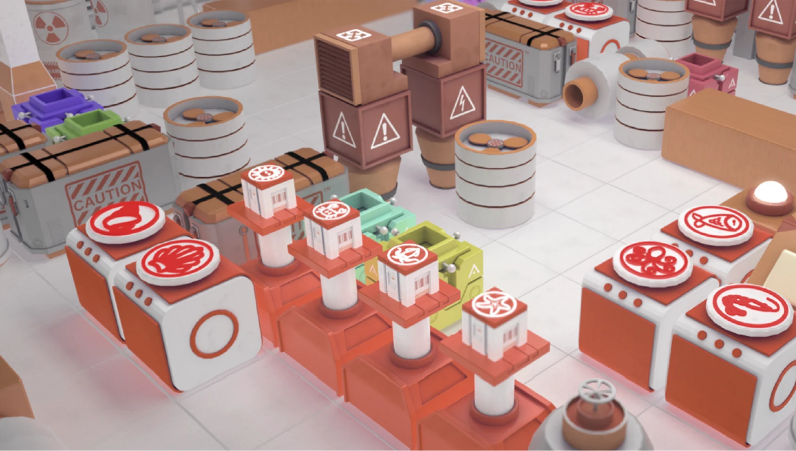
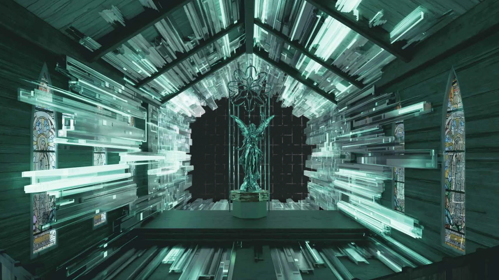

01 / OVERSEAS
海外教授 A01
海外院校合作导师 · 资料待补充
海外教授SFK GAME & ANIMATION DEPARTMENT
从世界观、角色与叙事，到动画、游戏美术与实时交互，我们以行业标准连接创作、升学与职业方向，让每位学生建立属于自己的作品语言。
OUR ADMISSIONS / 我们的录取
斯芬克游戏动画科系始终把录取结果放在首位。无论是竞争激烈的综合名校赛道，还是游戏与动画学生向往的专业院校，我们都以清晰的目标和持续的专业支持回应每一份信任。26申请季，我们已收获11枚 CalArts、29枚 NYU、27枚 USC、7枚 CMU、5枚南洋理工、16枚京都精华录取，以及40+枚皇艺、240+枚伦艺录取。
OUR MAJORS / 我们的专业
赋予生命与灵魂的伟大工程
动画设计是创造叙事的艺术，研究时间与运动，通过连续画面创造视觉魔法，为静态的图像注入生命与情感。

用艺术与规则重新定义游玩
游戏设计是一种综合性的创意过程，包括规则、叙事、视觉艺术、编程和音效设计。创造引人入胜的交互体验，为玩家提供独特的互动娱乐方式和挑战。
数字造梦师
游戏艺术家通过创造角色，生物，建筑，环境等视觉元素为游戏世界塑造独一无二的沉浸式交互视觉体验。
为世界建立视觉规则
从角色、场景到世界观，以研究、叙事与视觉开发塑造可信而独特的想象世界。

让不可见的力量被看见
通过粒子、流体、光影与数字合成，为影像和实时体验创造具有说服力的视觉奇观。
OUR TEACHERS / 我们的老师
连接海外院校、教学研发、学术研究与行业实践，让不同阶段的学习都能获得与专业方向相对应的经验支持。
海外院校合作导师 · 资料待补充
海外教授海外院校合作导师 · 资料待补充
海外教授课程研发与教学实践 · 资料待补充
教研导师课程研发与教学实践 · 资料待补充
教研导师学术研究与方法指导 · 资料待补充
学术导师学术研究与方法指导 · 资料待补充
学术导师行业项目与职业实践 · 资料待补充
业界导师行业项目与职业实践 · 资料待补充
业界导师升学与成长经验分享 · 资料待补充
校友导师升学与成长经验分享 · 资料待补充
校友导师从作品集学习到升学与职业现场，持续连接校友的经验、作品与行业观察。
让学生在商业实践、行业导师带训与岗位体验中，理解真实项目的标准、协作方式与交付逻辑。
以行业场景建立创作目标与交付意识。
连接一线经验，理解专业岗位的工作方式。
把作品能力转化为更清晰的升学与就业路径。
OUR COURSES / 我们的课程
精心设计与准备的课程，为您开启游戏动画之路扫清障碍，选择想要发展的方向，定制一个专属于您的课程计划吧！
探索更多课程游戏动画科系短期就业力项目，围绕商业实践、行业导师带训、岗位实习三大板块，链接知名企业负责人、设计总监及一线行业导师。学生将在真实项目与职场场景中完成高质量作品产出，提升专业协作与问题解决能力，并获得实习证明、推荐信及行业资源，为升学与就业积累更具竞争力的实践经历。